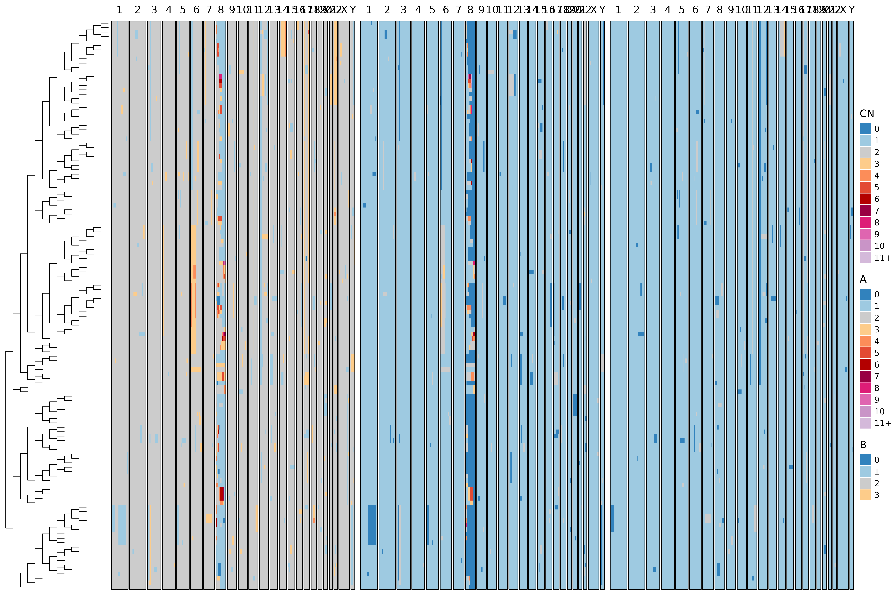
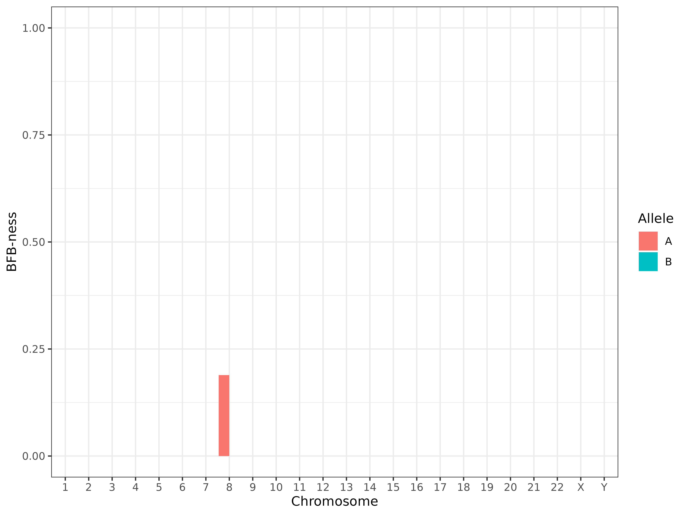

Using bridges
bridges.RmdThis tutorial demonstrates how to simulate copy number evolution with
BFB (Breakage-Fusion-Bridge) events, infer phylogenies from
allele-specific CNAs, and visualize the output using the
bridges R package.
Step 1: Simulate Copy Number Evolution
We simulate a single BFB event on chromosome 8, allele A, across 128 cells.
alleles_to_use <- c("A", "B")
sim <- bridges::bridge_sim(
max_cells = 128,
bfb_allele = c("8:A"),
normal_dup_rate = 0,
lambda = 2
)
head(sim$cna_data)
#> # A tibble: 6 × 8
#> cell_id chr bin_idx A B CN start end
#> <chr> <chr> <int> <int> <int> <int> <dbl> <dbl>
#> 1 cell_101 1 1 1 1 2 1 1000000
#> 2 cell_101 1 2 1 1 2 1000001 2000000
#> 3 cell_101 1 3 1 1 2 2000001 3000000
#> 4 cell_101 1 4 1 1 2 3000001 4000000
#> 5 cell_101 1 5 1 1 2 4000001 5000000
#> 6 cell_101 1 6 1 1 2 5000001 6000000Step 2: Fit the Phylogeny to the CNA Data
We run inference on the simulated data, disabling jitter smoothing.
k_jitter_fix <- 0
res <- bridges::fit(
data = sim$cna_data,
alleles = alleles_to_use,
k_jitter_fix = k_jitter_fix
)Step 3: Compare Inferred and True Trees
We compare the inferred tree to the true simulated one using Robinson-Foulds distance.
true_tree <- sim$tree
inferred_tree <- res$tree
phangorn::RF.dist(true_tree, inferred_tree, normalize = TRUE)
#> [1] 0.136Step 4: Visualize CN Profiles with Trees
We can visualize both the true and inferred trees alongside allele-specific CN profiles.
bridges::plot_heatmap(
sim$cna_data,
tree = sim$tree,
use_raster = FALSE,
ladderize = TRUE,
to_plot = c("CN", "A", "B"),
branch_length = 1
)
bridges::plot_heatmap(
sim$cna_data,
tree = res$tree,
use_raster = FALSE,
ladderize = TRUE,
to_plot = c("CN", "A", "B"),
branch_length = 1
)Step 5: Detect BFB Signatures
We use the built-in BFB detection function to quantify “BFB-ness” per chromosome and allele.
bfb_detection_df <- bridges::detect_bfb(res)
head(bfb_detection_df)
#> # A tibble: 6 × 8
#> mean N_trials N_successes chr allele p.value threshold adj.pval
#> <dbl> <int> <int> <chr> <chr> <dbl> <dbl> <dbl>
#> 1 0 127 0 1 A 1 0.005 1
#> 2 0 127 0 2 A 1 0.005 1
#> 3 0 127 0 3 A 1 0.005 1
#> 4 0 127 0 4 A 1 0.005 1
#> 5 0 127 0 5 A 1 0.005 1
#> 6 0 127 0 6 A 1 0.005 1
bfb_detection_df %>%
dplyr::mutate(chr = factor(chr, levels = c(1:22, "X", "Y"))) %>%
ggplot(aes(x = chr, y = mean, fill = allele)) +
geom_col(position = "dodge") +
theme_bw() +
lims(y = c(0, 1)) +
labs(x = "Chromosome", y = "BFB-ness", fill = "Allele")